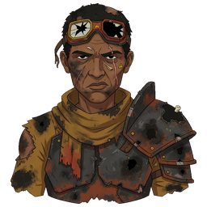
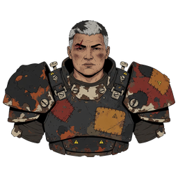
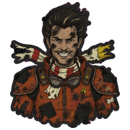
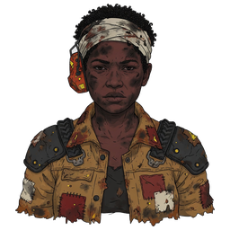
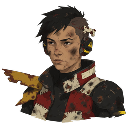
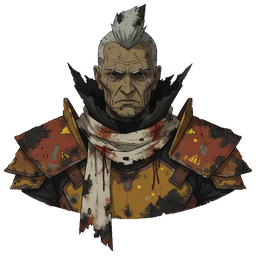

DIRECTION A / Linear investigation
Ash Circuit
A debt becomes a public reckoning.
The premise
You inherit a burned garage, your missing sibling's tools and a debt to league owner Marrow. Racing through five towns reveals that he has been turning duplicate debts into a private fleet. You bring the surviving witnesses to his home circuit and race him for a public reckoning.
Tone, art & audio
Gritty, intimate, angry, ultimately hopeful. Soot Pulp faces and battered Rust and Ink machinery directly support exhausted workers and small acts of loyalty; Hot Ink marks receipts and threats. Audio brief: dry garage percussion, low engine drones, sparse human voices; silence before the duel. No score or voice asset is required for these text cards.
Structure & player agency
Linear five-act investigation, 35 authored / 35 played events, seven per division: Scrap/Rook → Foundry/Ox → Salt/Vex → Switchback/Mica → Crown/Marrow. The garage is the returning home; acts change who can corroborate the ledger. Repeat the race–receipt–purchase loop; change surfaces, legal cars, witnesses and the meaning of the debt. All current 25 circuits can be used, with ten repeat visits framed by new evidence. Optional contracts influence relationship flavor, not whether the sibling survives. The finale requires a win; qualified ordinary wrecks still advance under existing rules, so story cards say “reach the next division,” not “win every race.”
Earn the next car
Keep the shared contract and current 0/7/14/21/28 unlock schedule. Debt is the dramatic reason to earn, not a second mandatory grind; insurance and optional work protect poor starts. Boss purchases and P/F use the shared fixed schedule and target dips, with G2's misses visible. Signature weaknesses become story teaching: Rook punishes late lines, Ox overcommits on tight corners, Vex needs straights, Mica rewards surface reading.
The intended tension curve
Current baseline misses these dips. G2 Club-reference bosses: 0.9279 / 0.9428 / 0.9311 / 0.9625; opening 0.8966, final 1.0461. Later target dips cannot be guaranteed by money alone under current stat clamps. Read G2’s limits.
Races, side content & cost
Ordinary armed races, boss fields and final duel already exist (S authoring). Reuse Foundry delivery, Rook retirement and clean-win contracts, plus decision-only grudges (S). Frame Crucible as a “breakers' night,” but it remains a lap race with existing wreck bounties; a true last-car-standing destruction derby needs new finish/scoring, AI and venue validation (L, excluded). A Rivet-only optional race would need enforced loadout/AI rules (M, excluded from the base). No scripted sibling rescue, escort or cinematic chase is implied.
S = existing content · M = bounded new hooks · L = new subsystem. Shared PR correction is a separate L balance workstream if every target dip is mandatory.
The people on the grid
Six existing fusion-review portraits, referenced from the repository. No new or altered artwork.
| Rival | Signature class | Personality and story job |
|---|---|---|
 Rook |
Needle | Bitter local collector who remembers every favor and fears his own creditor; first gatekeeper. |
 Ox |
Bastion | Blunt foreman who races to keep his crew's tools out of Marrow's hands; second gatekeeper. |
 Vex |
Comet | Impatient speed obsessive hiding the unedited record of a stolen lap; third gatekeeper. |
 Mica |
Trail | Patient mountain driver sheltering the missing sibling; fourth gatekeeper. |
 Relay |
Line | Quiet courier who reads every receipt twice and moves the evidence between towns. |
 MarrowFinal antagonist |
Bulwark | Polite fleet owner who speaks of people as depreciating equipment; final Crown duel. |
Classes are signatures. Actual fields need legal tier-by-tier garage purchases; a Champion does not appear in the opening. Ash’s existing rivals already change chassis.
Three cards from the story
Writing samples · three lines each · reading never gates a race
Opening / The spare key
The key survived the fire.
Your sibling's name survived in Marrow's book.
Only one of them still opens anything.
Midpoint / A second copy
Ox lays two receipts on the bonnet.
Same debt. Same date. Two ruined crews.
This time he asks you to stay for the race.
Finale / Open account
Relay has given every crew a copy.
Marrow can no longer burn the only book.
He can still put you into the wall.
Voices from the grid
- Rook
That corner collects faster than I do.
- Ox
Leave a lane, or become one.
- Marrow
I have already priced your victory.
What this direction costs
Overall direction scope S, strongest reuse, low structural replay variety. Thirty-five three-line cards (105 lines), six biographies, 18 base taunts plus six grudge variants; revise existing material and reuse all six fusion portraits. The risk is a predictable debt conspiracy stretched over long repeat races; vary the witness action, not just the next clue. No new schema for the base: retain events, five cups, rival garages, stories, unlocks, curve and saves. Branching forgiveness or variable endings would become M and are outside this baseline. Tone can become joyless; keep the reunited workshop and worker solidarity visible. PR correction remains the shared separate L issue.